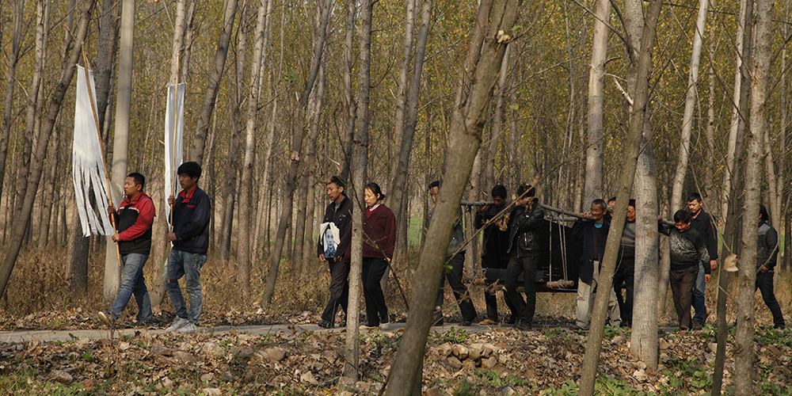

The Coffin in the Mountain
Directed by Xin Yukun | China | 2014 | 119 min.


"The Coffin provides an interesting example of a mainland Chinese synthesis between indie aesthetics and genre tropes"-Clarence Tsui, The Hollywood Reporter
Premiere:
Saturday, March 26
7:00 pm | McConomy Auditorium | CMU University Center
Event Includes:
+ Skype Q & A with Director Xin Yukun
+ Chinese food reception
Synopsis
After a charred body is discovered in the woods of a Chinese village, a black comedy of death, deception, cupidity, sex and guilt ensues. A young man tries to rebel from his father, but after the boy’s wrongdoings, their fates will be intricately linked. A woman, who for years has been victim of domestic violence, finds comfort in the arms of her ex-lover. The news of the death of her husband arrives as she was planning his murder. An honest village chief plans to retire but an exceptional event related to his son will pull him into the abyss. The Coffin in the Mountain is a striking first feature from Xin Yukun, whose photography background is evidenced by the way cold tones and composition quietly shape the story. Playing with time and sequencing, the drama unfolds as if the viewer is piecing together vague memories from a dream, but as the details crystalize, almost everyone in the small mountain community is shown to be guilty.
Awards
- Hong Kong International Film Festival, 2015, Young Cinema Award
- Venice Film Festival, 2014, Best Revelation Award (for Director Xin Yukun)
- Warsaw International Film Festival, 2014, Grand Prix
Director Xin Yukun

Xin Yukun is 30 years old and graduated in Photography from the Beijing Film Academy. His short film Seven Nights screened in many international film festivals. He worked for three years on the script of The Coffin in the Mountain, his debut film.